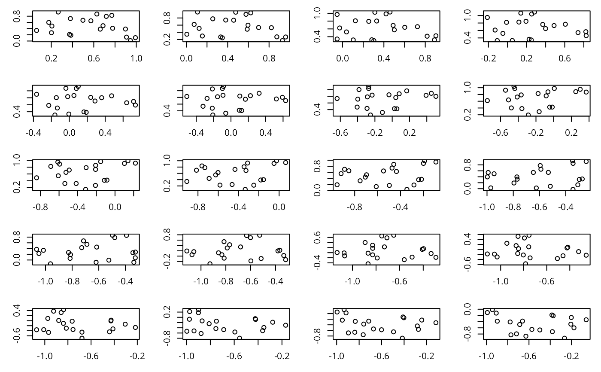
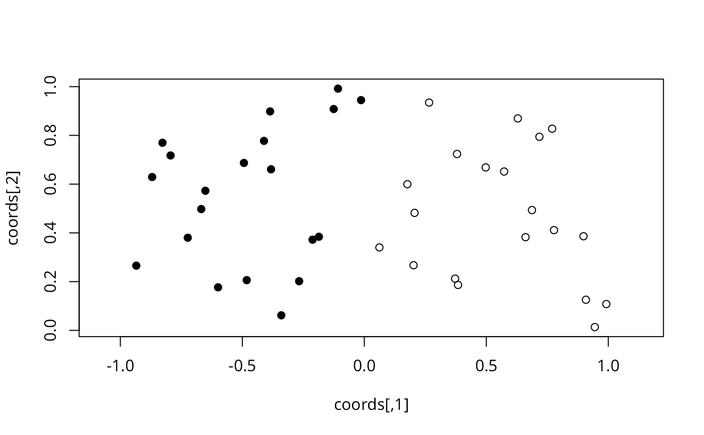

Rotate a set of point by a certain angle
rotation.RdRotate a set of XY coordinates by an angle (in radians)
Examples
set.seed(1)
### Create a set of coordinates
coords <- cbind(runif(20), runif(20))
### Create a series of angles
rad <- seq(0, pi, l=20)
opar <- par(mfrow=c(5,4), mar=c(3,3,1,1))
for(i in rad){
coords.rot <- Rotation(coords, i)
plot(coords.rot, xlab="", ylab="")
}

par(opar)
### Rotate the coordinates by an angle of 90 degrees
coords.90 <- Rotation(coords, 90*pi/180)
coords.90
#> [,1] [,2]
#> [1,] -0.93470523 0.26550866
#> [2,] -0.21214252 0.37212390
#> [3,] -0.65167377 0.57285336
#> [4,] -0.12555510 0.90820779
#> [5,] -0.26722067 0.20168193
#> [6,] -0.38611409 0.89838968
#> [7,] -0.01339033 0.94467527
#> [8,] -0.38238796 0.66079779
#> [9,] -0.86969085 0.62911404
#> [10,] -0.34034900 0.06178627
#> [11,] -0.48208012 0.20597457
#> [12,] -0.59956583 0.17655675
#> [13,] -0.49354131 0.68702285
#> [14,] -0.18621760 0.38410372
#> [15,] -0.82737332 0.76984142
#> [16,] -0.66846674 0.49769924
#> [17,] -0.79423986 0.71761851
#> [18,] -0.10794363 0.99190609
#> [19,] -0.72371095 0.38003518
#> [20,] -0.41127443 0.77744522
plot(coords, xlim=range(rbind(coords.90,coords)[,1]),
ylim=range(rbind(coords.90,coords)[,2]), asp=1)
points(coords.90, pch=19)
